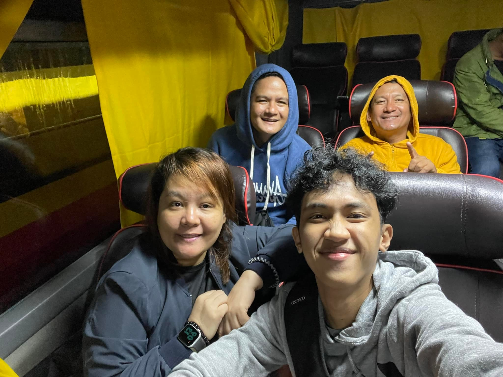
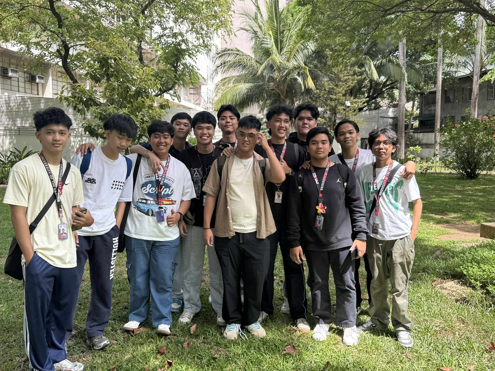

A Journey Raised by Love
By Neil Almonte
Childhood | Teenage | College
Childhood

I was born in Caloocan City on December 2, 2003.1 My childhood was not easy because of the challenges my family faced.2 When I was only two years old, my parents separated due to personal problems.3 Because of that situation, my grandparents became the ones who raised me.4 They welcomed me with love even though life was difficult.5 I grew up in an environment where we didn’t have much, but we always had each other.6 My grandparents taught me the value of hard work.7 They also taught me the importance of kindness and respect.8 Life with them was simple but meaningful.9 We lived in Palanan, Isabela where my grandparents had settled.10 That town became my new home full of memories.11 Doon ako unang natutong makibagay sa simpleng pamumuhay.12 I learned how to appreciate little things even when times were tough.13 Dito ko rin natutunan na ang pagmamahal ay hindi nasusukat sa materyal na bagay.14 I studied in Palanan from elementary until high school.15 My school became my second home because of the friends I met.16 My teachers in Palanan also helped shape my character.17 Growing up with my grandparents made me stronger.18 Their sacrifices inspired me to dream bigger.19 My childhood, though difficult, became the foundation of who I am today.20
Teenage Years
Then in my teenage years, I started to fall in love with computers.1 I became very curious about how computers worked and how everything inside them functioned.2 I would often wonder how programs were made and how technology kept improving.3 Pero dahil sa kahirapan ng buhay, hindi ko alam kung paano ako makakaangat.4 There were moments when I felt lost because of the challenges I faced.5 Sometimes I questioned if I would ever reach the dreams I had in mind.6 As a teenager, I carried a lot of questions about life.7 One of the biggest questions I had was about my mother.8 I often wondered why she left and what really happened to us.9 Madalas ko ring tanungin sa sarili ko kung bakit niya ako iniwan.10 Those thoughts made my teenage years emotionally heavy.11 But despite the confusion and sadness, I found strength in the people around me.12 My titas and titos always showed me love in their own ways.13 They made me feel that I was never alone.14 Lalo na ang lolo at lola ko na hindi nagsawang gabayan ako.15 Their love filled the empty spaces that I used to worry about.16 They reminded me that family is not only about who stayed but also about who chose to love you.17 Because of them, I slowly learned to accept my situation.18 I realized that even though life was difficult, I was surrounded by love.19 My teenage years became a time of pain, discovery, and quiet strength.20
College Life


In my college life, I experienced one of the most transformative moments of my journey.1 College opened my world in ways I never expected.2 Madami akong nakilala at halos bawat tao na nakasalamuha ko ay may sariling kwento.3 Most of the people I met had unique stories about their IT life.4 Some had habits and routines that inspired me to improve.5 During my first year, everything felt chaotic because the environment was so new.6 It was hard for me to adjust at first.7 Mahirap din makipagkaibigan sa mga taong hindi ko pa kilala.8 But even with the fear and uncertainty, I still tried my best.9 I pushed myself to step outside my comfort zone.10 I wanted to prove that I could handle the challenges ahead.11 Little by little, I broke the limitations I once placed on myself.12 Madami akong natutunan na bago pagdating sa coding.13 My skills slowly developed even if the progress was small.14 Each small improvement reminded me to keep going.15 I survived my first year without any major problems.16 Every semester taught me something new about life.17 I felt proud knowing I was slowly working toward my dreams.18 My college journey made me appreciate how far I’ve come.19 College became not just an education, but a journey of growth and purpose.20